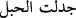

onlar (ehl-i kitap) bu işte seninle çekişmesinler. Sen, Rabbine davet et. Zira sen,
hakikaten dosdoğru bir yoldasın.
“Biz,” geçmişte var olan ve şimdi de varlığını sürdüren “her” muayyen “ümmete,”
başka ümmetin değil bu muayyen ümmetin ibâdet etmekte ve “uygulamakta oldukları
bir ibâdet tarzı” yâni başka bir ümmete âid olmayan özel bir şerîat “gösterdik”
muayyen kıldık. Yâni her şerîatı ümmetlerden belli bir ümmet için tâyin ettik. Öyle ki
onlardan hiçbir ümmet kendisi için belirlenmiş şerîatından başka bir şerîata müstakil
olarak da kendi şerîatına ortak yaparak da geçmez.
Ümmet, Allah’ın peygamber gönderdiği topluluktur.
Mûsâ (a.s.)’ın peygamber gönderilmesinden Îsâ (a.s.)’ın peygamber gönderilmesine
kadar olan ümmetin şerîatları Tevrât idi. Onlar, ona göre ibâdet ve amel eden
kimselerdir. Îsâ (a.s.)’ın peygamber gönderilmesinden Hz. Peygamber (a.s.)’ın
peygamber gönderilmesine kadar olan ümmetin şerîatları İncil idi. Onlar da, ona göre
ibâdet ve amel eden kimselerdir. Hz. Peygamber (a.s.)’ın peygamber gönderilmesinden
îtibâren kıyâmete kadar mevcûd olan ümmet ise bir tek ümmettir. Onların şerîatı ise
başkası değil Furkân’dır.
“Öyle ise onlar” diğer dinlerden muâsırın olan kimseler, kendi şerîatlarının önceki
ataları için tâyin edilen Tevrat ve İncil olduğunu iddiâ ederek “bu işte” din hususunda
“seninle çekişmesinler.” münâkaşa etmesinler. Çünkü onlar nesh olunmadan önce
geçmiş ümmetlere âid iki şerîat idi. Bunlar ise müstakil bir ümmettir. Şerîatları sadece
Yüce Kur’an’dır. Diğer dinlere mensup insanlar din işinde seninle kavga etmemeliler.
Senin din hususundaki durumun gayet açık seçiktir. Dinde kavga düşünülebilir mi?
Güneşin nûru hakkında tefekkür ve teemmüle mahal yoktur.
“Sen,” bütün insanları “Rabbine” din ve şerîatlarında açıklandığı şekilde O’nu bir
tanımaya ve O’na ibâdete “dâvet et.” Dâvetini bir topluluğu bırakıp diğerine tahsis
etme. Çünkü bütün insanlar senin ümmetindir. “Zira sen, hakikaten dosdoğru bir
yoldasın.” Yâni Hakk’a ulaştıran dosdoğru bir yol, yâni din üzeresin.
68. Eğer seninle münakaşa ve mücâdeleye girişirlerse: “Allah yaptığınızı çok iyi
bilmektedir.” de.
“Eğer seninle” hak ortaya çıktıktan ve delil zorunlu olarak bulunduktan sonra
“münâkaşa ve mücâdeleye girişirlerse:” Tehdid yollu onlara “Allah yaptığınızı”
yaptığınız saçmalıkları -ki bunlardan birisi de mücâdele ve münâkaşa etmeleridir- “çok
iyi bilmektedir.” Onlardan dolayı elbette size karşılık ve cezâ verecektir, de.”
Mücâdelenin aslı “
” yâni sağlamca eğirdim, sarıp büktüm, ifâdesindendir.
Sanki birbiriyle münâkaşa eden iki kişiden her biri diğerini büküp görüşünden